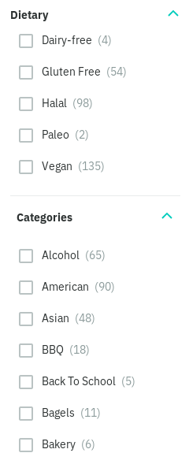
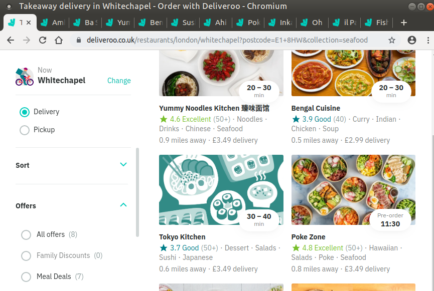
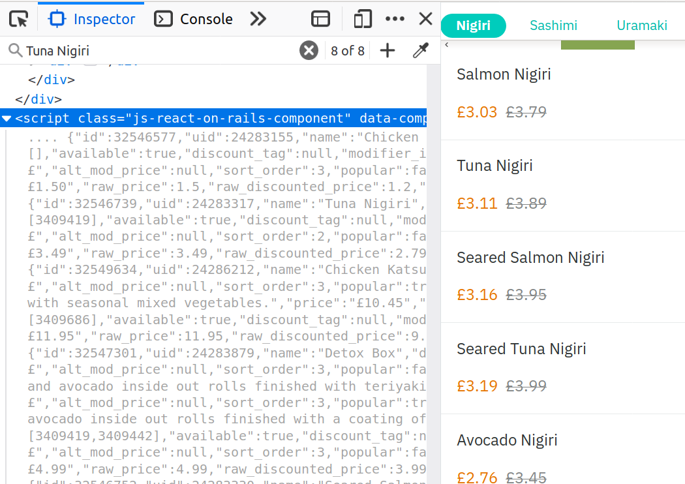

Scrapyroo
Table of Contents
These are my slides + speaker notes from November Rust London User Group meetup. Huge thanks to Ernest for organising!
Presentation is done in org-reveal and source is available here. Grey areas are speaker notes, rest are actual slides.
Hi, I'm Dima and today I'm gonna tell you about Scrapyroo, which is a tool I built to search over Deliveroo menus and make my life a bit easier.
The tool was made possible by Tantivy, scrapy and React
Also just to make clear: I'm not employed by Deliveroo! So it's not like I'm just pitching you the feature I implemented on my day job :P
¶1 Past Rust experience
Virtually none apart from some Project Euler.
This time I also got away with not writing much of new Rust code. Which is a good thing! Library I'm going to tell you about does deals with most of complicated and tedious stuff.
But this is my first proper interaction with the Rust ecosystem.
I am comfortable with many different other programming languages though and have been following Rust news, so haven't struggled with the languages specifically.
¶2 Deliveroo is great!
I can't imagine ordering food without a service like this.
Not sure if there are any Deliveroo employees here, but I want to thank you for a great product!
As a millennial/someone born in mid 90s, I am imagining life before services like Deliveroo and Uber as some sort of dark ages.
My older friends told me some dreadful stories. Apparently you'd browse through paper menus, have to phone call the operator and coordinate the courier?
Brrr.. I'm lucky to live now.
¶3 The problem
No search by menus, only restaurants/cuisines :(
It's ok for getting something to eat, but not great when you know what you want to order.
UPDATE: Some spooky stuff happened 🎃 On the morning of Tuesday, 19 November when I was to give this talk I found out that the search bar on Deliveroo has gone from "Restaurants or cuisines" to "Dishes, restaurants or cuisines"!
Which meant that Deliveroo supported searching in dish names. I thought I'd gone bonkers until few of my friends confirmed that they didn't remember that and it must have been added very recently, over the weekend.
I like to think that I'm very important and that wasn't a coincidence so maybe I have some sort of superpower. If you miss a feature in some web service you're using, let me know, maybe I can implement it and that would get the service to implement it too :P (could start with editing tweets, perhaps?)
So, you can search in dishes too now, however hopefully that doesn't make my tool irrelevant, you'd be able to see for yourself later. (e.g. full text menu search, not just titles, search as you type, queries)
¶3.1 You can't find specific dishes!
- craving things
- varying your diet
- accommodating multiple people's prefs at the same time
Why would you want this?
- Craving: e.g. if you want to treat yourself with some dessert, better get something you'd really enjoy instead of mediocre one because that's what the restaurant offered.
- Varying: I'm trying to expose myself to all kinds of food to make sure I'm not missing on some important nutrients.
- Multiple people: you and your friends want different things and you need to choose a single restaurant to order from.
¶3.2

Just to demonstrate what I'm talking about, here's the Deliveroo web interface (mobile looks similar).
You can filter by dietary restrictions, fair enough, but then finest you can do is to pick "Categories".
Some of them kinda make sense (e.g. "Bagels"), some of them are too broad (e.g. what is "Asian/American"? could be anything). Some of them are just plain weird, like what is "Back to school" supposed to mean?
This is the best you're gonna get from Deliveroo.
¶3.3

Say, you want some grilled tuna and green vegetables.
Best you can do is open all 15 places that serve fish in different tabs, Ctrl-F tuna and then try to decide among them.
¶3.4 Sad!
Full text search is a basic human right!
I asked people and apparently they just accepted and never questioned that sad workflow!
It feels especially wrong to me because human brains are good at creative things. Not so good at stuff like text search – that's one of things computers are exceptionally good at and we're ought to exploit that.
¶4 What can we do?
scrape menu data off Deliveroo website
e.g. every day at 10 AM
About 600 restaurants deliver to my postcode.
Results in huge json file.
index menu data
Indexing needed mostly because I want
- search operators
- stemming, e.g. removing inflection, so there's no difference, between 'grill and grilled'
- backend to serve indexed data
- frontend to search in the data
¶4.1 Scraping menus
Python (scrapy). Almost no need for HTML parsing!

To try it for yourself, go to some restaurant, e.g.
https://deliveroo.co.uk/menu/london/spitalfields/tokyo-sushi-finsbury-park
open chrome inspector and type {" . js-react-on-rails-context should be among the results.
If there are any Deliveroo developers here, sorry for public dissection of your website!
¶4.2 Scraping menus
{
"urls": ["/menu/london/liverpool-street/pub-classics-from-greene-king-bishopsgate"],
"delivery_location": { "address": [ -0.0623, 51.123 ]},
"id": 189155,
"name": "Pub Classics from Greene King - Kings Arms",
"description": "Bringing the pub to your door",
"uname": "pub-classics-from-greene-king-bishopsgate",
"menu": {"items": [
{
"id": 31299189,
"name": "Chickpea, Red Pepper & Hoisin Burger (VE)",
"description": "Chickpea and mixed vegetable burger",
"price": "\u00a310.79"
},
{
"id": 31085809,
"name": "Fish & Chips with Wine for 2",
"description": "2 x cod with chips and a bottle of wine\r\n",
"price": "\u00a338.99"
}
]}
}
We get something like that (I've filtered out irrelevant stuff) for each restaurant.
Scraped json data is kept separately to checkpoint in case scraping/indexing fails.
¶4.3 Indexing menus & serving data
I'm going to be explaining why it works well later in the presentation.
¶4.4 Frontend
HTML and some Javascript/React
¶5 Scrapyroo
(Live demo). You can try it here: scrapyroo.karlicoss.xyz
Note that this only indexes my district (Whitechapel). Also not sure for how long I'll expose it, but I'll make a demo video before shutting it down.
Also there is a screenshot in readme.
¶5.1 Features
search queries
demo: say you want some halloumi and green vegetables.
Type: 'halloumi AND vegetables'. Whoa, vegetable smoothie in results? No, thank you. So we can use phrase query (quotes) and exclusive query (-): add 'AND -"vegetable smoothie"'. Ah, that's better now!
Say you also want some desert. Add 'AND cheesecake' or 'AND "ice cream"'. Nice, few places actually serve this combination!
Or you're ordering with two other friends.
You want prawns, another one wants chicken salad, and the third wants some feta.
'prawns AND "chicken salad" AND "feta"' – and we instantly find few matches!
Without full text search there is no way you would ever find it, and someone would be unsatisfied about collective choice.
search as you type
At the moment requests index on almost every keystroke, would be nice to keep a persistent connection, although that's something that is hard to implement in a generic way.
Demonstrate in dev tools
- works from phone as well as desktop browser
- show debug mode? maybe later if I got a bit more time
- ui perhaps is a bit rough
¶6 Why Tantivy?
initial lunrjs implementation was visibly laggy even on desktop
Need to carry data inside the huge html – not that great.
You need internet anyway to make an order, so I didn't mind having a proper backend.
also, why not?
Wanted to try out Rust for some real project.
Never used any other search engine libraries and was recommended Tantivy.
¶7 Tantivy: good
Features:
highlight positions, snippets
alt-tab to the presentation and show what I mean by snippets?
Without the snippets: pretty sad.
Demonstrate lack of snippets:
- disable highlights in chrome inspector
- tick 'show unmatched'
- untick 'show matched first'
transactional index updates
add/delete/rollback/commit
autoreloading latest commit in searchers
Caveat: have to be careful when deploying index remotely,
meta.jsonfile has to be deployed last!I'm in progress of writing up a github issue, will put the link here.
- Python bindings
well documented, easy to modify
Mention facets?
¶7.1 Tantivy CLI: awesome
Takes you from zero to prototype in a matter of minutes without distracting on irrelevant stuff.
tantivy-cli new -i your_index # interactive! tantivy-cli index -i your_index < data.jsonl tantivy-cli serve -i your_index # http interface tantivy-cli search -i your_index -q "spinach AND paneer" # cli queries tantivy-cli bench # query benchmarking
And I'm not exaggerating about minutes! You can index data and expose it to your frontend without a singe line of code.
I spent most time on scraping and frontend.
¶8 Tantivy: bad
no nested document support (yet)
- would be nice to have queries like starter:dumpling AND main:salad
- potentially less resource wasteful
You can't return matched menu items only, have to index and serve the whole menu.
It's not too bad though, I'm getting around this by relying on line breaks to only display matched items.
¶9 Enhancing Tantivy
Rust observations:
single binary: very easy to deploy
cargo install tantivy-cli --root /Dropbox/soft/tantivy-cli
Especially on VPS, which only (huh!) got two cores and wouldn't handle compiling Rust well
musl: minimal libc implementationapt install musl-tools rustup target add x86_64-unknown-linux-musl cargo build/install --target x86_64-unknown-linux-musl
Turned out my desktop and my VPS where I wanted to run the backend use different libc version.
Normally that would mean crosscompiling and all the associated horror.
With Rust it turned out to be a matter of adding a target via rustup and that's it!
derive debug/serialize
First seen in Haskell!
Python: kind of there via NamedTuples/dataclasses
I often miss it in C++! You can implement it with templates, macros or
boost::preprocessordepending on how much you hate yourself/your team :P But it's a very reasonable default feature to have.
¶9.1
Cargo: very easy to change dependency to local
tantivy-cli/Cargo.toml:
- tantivy = "0.10"
+ tantivy = { path = "/coding/tantivy" }
I managed to run this with the minimal effort.
There is tantivy, tantivy-cli and tantivy-py. I was experimenting with exposing this snippet API from tantivy so needed to change dependency.
To be fair, not too bad in pip:
pip3 install --user 'git+https://github.com/karlicoss/tantivy-py@delete-all-documents'
However, not discoverable via --help, you have to know what to look for!
or, github:
cargo install \ --git https://github.com/karlicoss/tantivy-cli \ --branch serve-snippets
I had to patch tantivy a bit, and it would take me a bit of time to get PRs accepted to upstream.
You can try it as easy as you would
¶9.2
tantivy-py: surprisingly simple integration
just
pip installthanks to setuptools-rust.Benefits from existing Rust ecosystem: e.g. can run
cargo build, etc. You just write normal Rust code.easy to interface
fn delete_all_documents(&mut self) -> PyResult<u64> { self.inner_index_writer.delete_all_documents().map_err(to_pyerr) }Powered by PyO3.
¶10 Contributions back
I figured Tantivy could benefit from some things I implemented.
Pull requests in progress:
exposing absolute highlight positions
to_htmlisn't gonna work well, you'll want to restyle it.React boilerplate to interact with CLI backend
Most of my time was spent on getting around frontend quirks, so that would make prototyping even easier.
¶11 Outtakes
rust & tantivy
Very pleasant experience, no frustration
my life is simpler now!
I don't have to waste time browsing through the website
- discovered places I'd have never found otherwise
you don't have to suffer from inconvenience in your life
If you can program, you are literally capable of anything you can think of (well, given enough time :P).
You can bend the interactions with the outside world the way you want.
¶12 Credits
github.com/petr-tik: ask him about Tantivy!
Petr pushed me to actually give a talk, helped with Tantivy and gave me lots of helpful advice on improving the presentation. Thank you!
He's passionate about Tantivy and will be happy to help you if you think something is missing or can be improved.
- Katya: beta testing and ghostwriting
¶13 Thanks!
Questions?
- github.com/karlicoss/scrapyroo
beepb00p.xyz/scrapyroo.html: speaker notes!
The presentation will be available as plain text (as well as my notes), so hopefully you won't miss anything.
Tantivy:
Me:
¶14 Appendix: Tantivy details
¶14.1 how are scores calculated?
See Explanation. Basically builds a computation tree for a given match.
Demonstrate explain in logs?
'pretty' json is a little rough at the moment.
¶14.2 how are snippets selected?
Somewhat heuristic, see search_fragment
The returned list is non-empty and contain less than 12 possibly overlapping fragments.
It is ok to emit non-overlapping fragments, for instance, one short and one long containing the same keyword, in order to leave optimization opportunity to the fragment selector upstream.
¶15 Appendix: random Rust things
¶15.1 Unicode handling
didn't have time to figure it out, so I just stripped all non-ascii
¶15.2 serde and #[derive(Serialize)]
ran into orphan rule
¶15.3 binary size:
/coding/tantivy-cli/target $ du -hd1 2.2G ./x86_64-unknown-linux-musl 2.2G ./debug 1.5G ./release 5.8G .
Not very cloud sync-friendly! However happily accepts symlink as target directory, so not too bad.